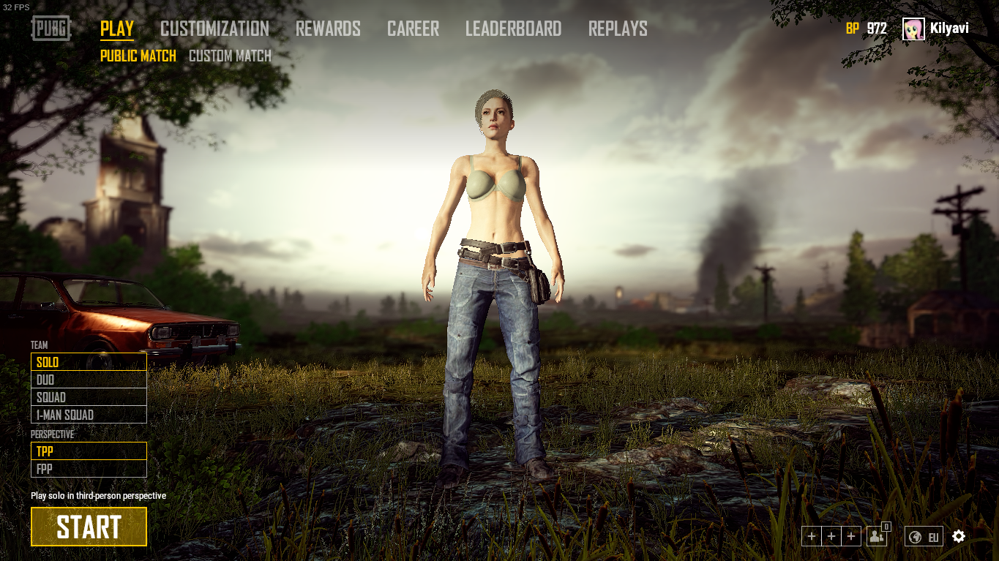
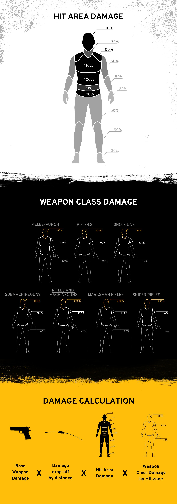

Обновление PUBG 1.0 от 21.12.2017 на русском
* Пожалуйста, обратите внимание, когда активна функция посмертной записи и повтора, производительность некоторых PC может быть снижена.
Оптимизация клиента
- Оптимизированы данные о местности для меньшего использования памяти
- Оптимизированы текстуры для меньшего использования памяти
- Оптимизировано море за счет уменьшения волновых эффектов
- Снижены лаги при наличии многих игроков в поле зрения
- Оптимизирована анимация персонажей
- Уменьшено использование памяти персонажами
- Добавлены уровни детализации для дальнейшей оптимизации рендеринга оружия на больших расстояниях
- Оптимизированы различные мировые эффекты
- Оптимизированы различные элементы пользовательского интерфейса
- Уменьшены проблемы с задержкой при загрузке местности
- Уменьшено времея загрузки местности
Оптимизация сервера
- Снижение лагов для игроков, двигающихся неномально
Лобби
- Переработан фон и интерфейс лобби
- Добавлено меню «Повторы»
- Добавлена функция повтора, которая может записывать до 1 км вокруг персонажа
- Пожалуйста, включите сохранение повтора в параметрах, прежде чем начать матч (или отключите её сразу нахуй - прим. пер.)
- Когда игра заканчивается, повтор сохраняется и может быть воспроизведён в «Лобби - Повторы»
- Можно сохранить до 20 повторов. Они будут автоматически удалены начиная с самого раннего, когда количество превысит 20
- Вы не сможете просматривать повторы, сделанные в предыдущей версии клиента.
- Руководство по управлению:
| Кнопка | Назначение |
|---|---|
| J | Включить таймлайн (игрок может перейти к желаемому времени, поставить на паузу) |
| P | Пауза |
| ↑ ↓ | Изменение скорости воспроизведения |
| B | Вернуться к своему персонажу |
| W A S D | Изменение камеры |
| E Q | Изменение высоты камеры |
| Удержание Shift, Ctrl | Изменение скорости движения камеры |
| Tab | Открыть список игроков (Если вы нажмете на ID, камера переместится к этому игроку) |
| V или ЛКМ | Камера наблюдателя (Вы можете наблюдать от лица выбранного игрока) |
| C или ПКМ | Камера следования (Камера следует за выбранным игроком и вы можете менять угол и приближение) |
| F или Пробел | Свободная камера (Двигать камеру свободно по карте) |
| L | Открыть список битвы (хз, что это - прим. пер.) (Вы можете проверить движуху вокруг выбранного игрока) |
| M | Карта (Если Вы кликните ЛКМ по иконке игрока на карте, вы можете переместиться для наблюдения за ним. Если Вы кликние ПКМ на пустом месте на карте, Вы можете переместиться в эту позицию в режиме свободной камеры) |
- Добавлена функция контроля за персонажем. Теперь Вы можете присвоить номер, наблюдаемому на данный момент, персонажу, при помощи Ctrl+0~9, и вернуться к предыдущему помеченному персонажу нажатием 0~9
- Эта функция недоступна, если помеченный персонаж далее чем в 1км от вашего персонажа.
- Добавлена функция контроля позиции. Теперь Вы можете присвоить номер области карты в текущей позиции с помощью Ctrl+9~0 (Numpad), и переместиться к предыдущей помеченной области нажатием 0~9 (Numpad)
- Камера будет к предыдущей локации, если номер не назначен
| Eranel | Miramar | Num |
|---|---|---|
| Novorepnoye | Prison | 0 |
| Severny | La Cobreria | 1 |
| Georgopol | Torre Ahumada | 2 |
| Rozhok | Campo Militar | 3 |
| Yasnaya Polyana | El Pozo | 4 |
| Pochinki | San Martin | 5 |
| Lipovka | El Azahar | 6 |
| Mylta | Valle del Mar | 7 |
| Primorsk | Los Leones | 8 |
| Military Base | Puerto Paraiso | 9 |
Мир
- Добавлена новая карта - Miramar
- Miramar будет постоянно чаще попадаться
- Miramar поддерживает 2 типа погоды:
- Ясно
- Восход
Miramar построен и модифицирован используя ключевой опыт Battle Royale, предоставляя разнообразные визуальные эффекты и игровой процесс:
- Паркур будет еще более полезными при пересечении местности Miramar
- Игроки могут испытать высокотактичные битвы, которые вынудят их использоваить их навыки прикрытия и сокрытия
- Выбор транспорта важнее чем раньше, как и вождение по пересечённой местности теперь отличается от опыта вождения по дороге
- Карта игры будет выбрана случайным образом когда матч начинается
- Убраны туманные и дождливые погоды из Erangel (О_о Нахуя?! - прим. пер.)
Вещи
- Добавлены 5 видов нового оружия:
- Добавлен DP-28 (ДП (Пулемёт) - Дягтерёва Пехотный. - прим. пер.), эксклюзивный для Erangel. DP-28 будет находиться в мире. Он имеет 47 патронный круглый магазин для 7,62 мм. Обвес и х4 могут быть прикреплены. Он имеет низкую скорость стрельбы, но эффективную дальность стрельбы с высоким уроном
- Добавлен AUG A3. AUG A3 можно получить из груза. Это вариант штурмовой винтовки с системой bull-pup, в которой используется стандартный магазин на 30 патронов 5,56 мм и 30 патронов при расширении. Он имеет высокую начальную скорость, высокую скорость стрельбы и низкую вертикальную отдачу.
- Добавлен R45, эксклюзивный для Miramar. R45 будет находиться в мире, он использует .45 патроны и 6 пуль в барабане. (Да, это ебучий револьвер - прим. пер.) Коллиматор может быть прикреплён. Он имеет высокую точность и скорость перезарядки быстрее, чем R1895 (Наган - прим. пер.)
- Добавлен Win94, эксклюзивный для Miramar. Win94 будет находиться в мире. Это вариант винтовки с рычажным механизмом, в котором используются .45 патроны и 8 пуль. Он для опытного игрока, так как он не предназначен для обвеса, кроме пулевых петель (Я не в курсе - прим. пер.), и имеет среднюю дальность действия с низкой скоростью перезарядки, но с большим уроном
- Добавлен Sawed-Off (Обрез - прим. пер.), эксклюзивный для Miramar. Sawed-Off будет находиться в мире. Он использует 12 калибр и 2 обоймы могут быть загружены. Нет доступных приложений. Он имеет короткий диапазон, высокий разброс, более низкий урон, чем другие дробовики, но может стрелять в быстрой последовательности
- Добавлен новый костюм в груз
- Наган не будет появляться в Miramar
- Kar98k больше не будет находиться в грузах. Его появление в мире останется неизменным
Транспорт
- Добавлено 3 новых транспортных средства:
- Добавлен Фургон. Фургон - шестиместный автомобиль и эксклюзивный для Miramar. Он имеет низкую максимальную скорость и мощность, но у него самый высокий уровень HP в игре. Поэтому Фургон может быть полезен в различных тактических ситуациях
- Добавлен Пикап. Пикап - четырехместный внедорожник и эксклюзивный для Miramar. Он адаптирован для ухабистой местности Miramar. Пикап - это самый универсальный автомобиль в игре и подходит для различных игровых стилей
- Добавлен Гидроцикл. Гидроцикл - двухместное водное транспортное средство. Игрок на пассажирском сиденье может использовать свое оружие. Он имеет хорошую управляемость и высокую мобильность, поэтому вы можете ожидать, что Гидроцикл преуспеет в тактике партизан.
- Мотоцикл и Багги также доступны в Miramar. У них разные окраски, в сравнение с роднёй из Erangel
Анимация
- Добавлен паркур
- Дополнительная анимация для объектов с высотой около 60 см или ниже (при удержании Shift)
- Значительно уменьшенная проблема с обрезкой куртки и шерсти при перемещении в ADS при наклоне
- Добавлена отсутствующая анимация (и звук) для смены режимов в UZI
- Переходы между анимацией спринта и бега теперь более плавные
- Улучшение анимации при отладке улучшилось, чтобы обеспечить согласованность между ADS / FPP и TPP
- Положение пистолета в FPP будет снижено в зависимости от прицела или другого обвеса, установленного на огнестрельном оружии
- Изменена анимация FPP и ограничения, чтобы уменьшить видимость внутри собственного персонажа
- Перемещена камера для правильного положения в режиме FPP для водителей
- Положение большинства оружия в FPP было изменено для дальнейшего сокращения обрезки одеждой
Геймплей
- Баллистика переработана
- Снаряды теперь подвергаются сопротивлению воздуха. Это означает, что снаряды теперь будут терять скорость с течением времени, что приведет к большему падению пули и увеличению времени полета
- Зоны поражения были модифицированы
- Шея теперь защищена шлемом (особенно велосипедным ремешком, ага - прим. пер.)
- Урон в корпус был увеличен
- Базовый урон теперь модифицирован классом оружия
- Актуальный урон теперь учитывает следующие модификаторы
- Параметр базового урона оружия
- Дистанция полёта снаряда (урон снижается с расстоянием)
- Модификатор зоны поражения
- Модификатор класса оружия
- Пули теперь проходят насквозь воду, в зависимости от скорости (больше скорость - больше пройдёт)
- Улучшены эффекты частиц прохождения воды

- Баланс оружия
- SR
- Уменьшена скорострельность СКС и Mini-14
- Увеличен урон Kar98k и M24 и уменьшен у AWM
- Немного увеличена обтекаемость M24
- Увеличена обтекаемость Kar98k
- Win94
- Добавлен коллиматор для Win94 для более лёгкого прицеливания
- Увеличено приближение на Win94 в ADS при задержке дыхания
- Увеличена отдача
- Обвес
- Добавлены метки для отсчёта расстояний на текстуре сетки 15x
- Добавлена новая 4х сетка для снайперов, ПП, 5.56 и 7.62 оружия
- Большие прицелы (8x, 15x) теперь имеют регулируемое приближение колёсиком мышки (по умолчанию)
- Коллиматор, Голлограф и 2х теперь имеют яркость сетки, регулируемую с помощью колёсика мышки
- Удалена M16A4 из подсказки 8x и 15x
- Добален эффект размытия снаружи прицела
- Увеличена скорость спринта со снайперской винтовкой в руках (теперь такая же как и со штурмовой винтовкой)
- Уменьшена отдача Mk14
- Уменьшенf продолжительности дрожания камеры при стрельбе из Vector (Vector теперь должно быть проще удержать во время стрельбы)
- SR
- Транспорт
- Баланс управления транспортом модифицирован
- Управление транспортом дополнено, чтобы быть более реалистично
- Улучшена анимация транспорта и пассажира
- Добавлена возможность бинтоваться и колоться во время езды (только для пассажиров) (Да ладно!!! - прим. пер.)
- Унифицирован размер всех моделей УАЗа, количество мест уменьшено до 4
- Другое
- Исправлена чрезмерная атака цели, когда он находился в режиме ADS
- Удалено размытие эффекта оружия и объектов, близких к камере, которые появились в режиме, отличном от ADS
- Период заживления бинтами был уменьшен до 4,5 секунд с 8,5 секунд. Время каста и количество восстановленного здоровья такие же
- Игроки теперь могут прыгать с парашютом и приземляться на определенные районы, которые ранее были недоступны, включая окраины острова
- Снижение положения камеры при игре от третьего лица
- Увеличенный вертикальный диапазон прицеливания в склонной позиции
Звук
- Изменена музыка в лобби
- Улучшен звук двигателя
- Добавлен звук, проигрываемый на краю голубой зоны
- Добавлены 3 разных звуковых эффекта для красной зоны
- Звуки выпущенных бомб
- Звуки падающих бомб
- Звуки взрывов
- Добавлены звуки прыжка в воду. Звуки будут зависеть от скорости
- Улучшен звуковой эффект осколочной гранаты:
- Звук меняется в зависимости от дистанции от взрыва
- Например, игрок может слышать только звук взрыва с большого расстояния, но на расстоянии 20 м, игрок может слышать звук взрыва и звук обломков, вызванных взрывом
- Снижены реверберации голоса персонажа при попадании в помещение
UI/UX
- Улучшен пользовательский интерфейс емкости рюкзака на экране инвентаря
- Перемещён журнал убийств из нижнего левого угла в верхний правый угол
- Применён новый шрифт для английского
- Улучшены проекты для игрового HUD, окна параметров, инвентаря, экрана меню и окна системных сообщений
- Переработан цвет полосы здоровья
- Отображение жёлтого когда НР меньше 50%
- Отображение красного когда НР меньше 25%
- Отображение красного моргающего когда НР меньше 10%
- HUD шлема, брони и рюкзака теперь включены по умолчанию
- Улучшен интерфейс Solo/Team
- Перемещены полосы здоровья членов команды из левого верхнего угла в нижний левый угол
- Изменены цвета и маркировка в мини-карте, карте мира и пользовательском интерфейсе списка команд
- Добавлены индикаторы для членов команды, чтобы проверить их статус (автомобиль, парашют, жив / мертв, DBNO, состояние соединения и т.д.).
- Улучшено взаимодействие HUD
- Если в рюкзаке осталось больше места, шрифт станет красным, чтобы показать, что предметы не могут быть подняты
- Улучшена мини-карта и карта мира
- Уменьшена насыщенность мини-карты, чтобы дополнительно подчеркнуть информацию о членах команды
- Скорректированы цвета карты мира, чтобы увеличить видимость маркеров и другую информацию
- Игроки могут проверять направление FOV команд на карте мира и мини-карте
- Когда члены команды попадают на один и тот же автомобиль, появится один индикатор
- Добавлена функция deathcam, которая находится в настройках.
- Применён эффект размытия на фоне экрана результата игры
- Добавлено два новых привязки клавиш, чтобы включить функцию переключения / удержания для Aiming и ADS на отдельные клавиши
- Добавлена возможность переназначения функциональных клавиш воспроизведения (Таймлайн вкл/выкл, Воспроизвести/Пауза, Скорость воспроизведения)
Языки
Добавлены 4 языка: Итальянский, Португальский (Бразильский), Испанский (Мексиканский) и Китайский (Традициональный)